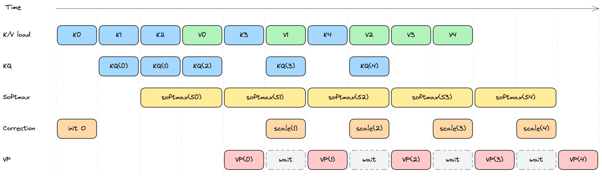
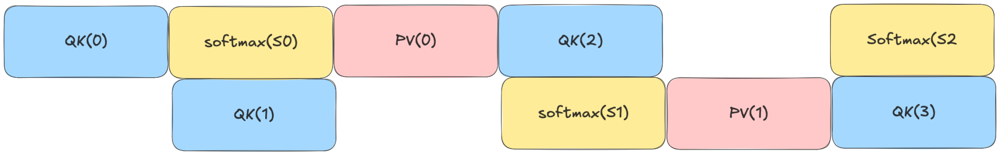
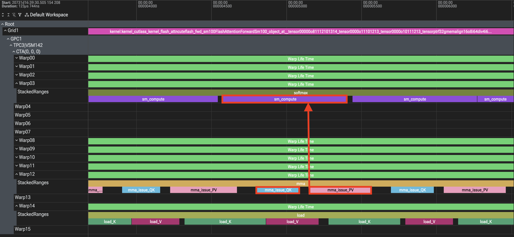
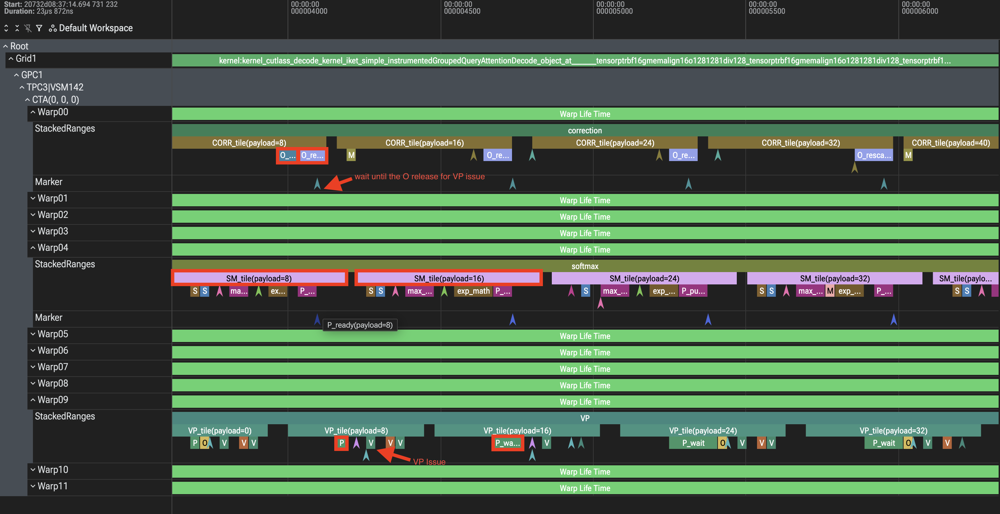
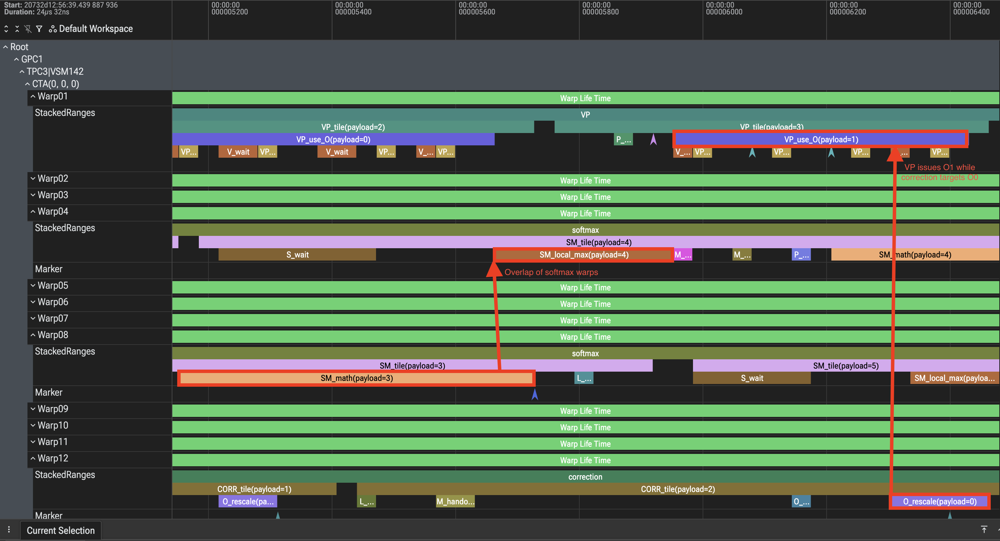
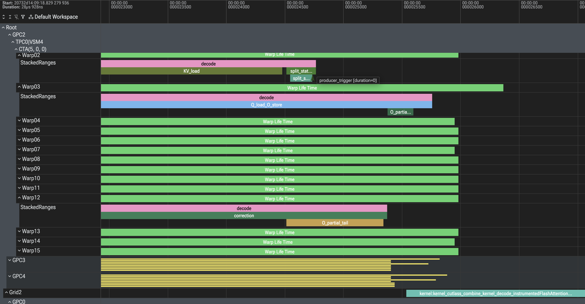
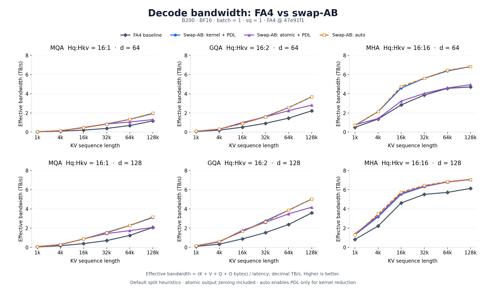
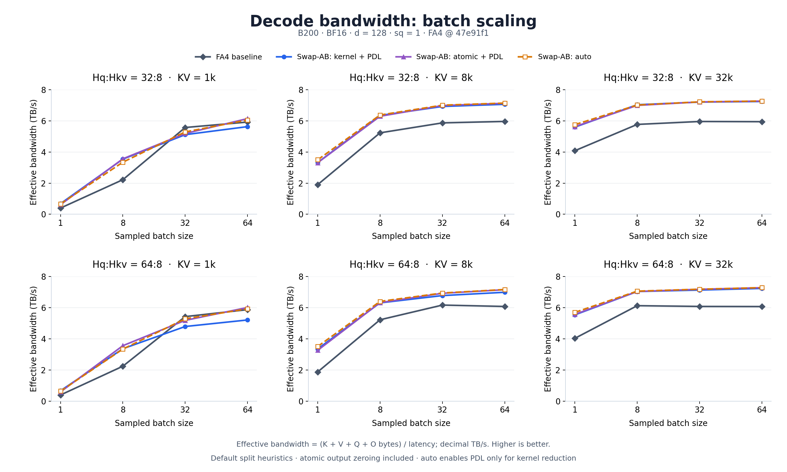

Colfax的S/P ping pong让FA4 decode在Blackwell上快了16%：下一个KV块的QK不再等当前块的softmax。但PackGQA打包query head之后，打包维度仍可能远小于FA4的tile：64 query head配8 KV head，128行tile里只有8行有效，剩下全是padding计算。
换个思路：不跟FA4拼同一套tile，改算S^T=KQ^T、O^T=V^TP^T，把KV位置放到大矩阵维，score tile从128×128缩到128×8；再用双softmax warpgroup、双O槽、PDL、thread block cluster内reduce一层层抠调度。B200上最高跑到FA4的2.26倍。
CUTLASS GQA decode设计换了操作数顺序，算S^T = KQ^T/√d和O^T = V^TP^T：把KV位置放到大矩阵维，小query head group放另一维。8头group、128个KV token的块，score tile可以是128×8而不是128×128；softmax仍对KV位置归约。
更小的score tile也减少从TMEM读的数据：softmax线程把score fragment留在寄存器，先释放TMEM槽再算概率。FA4本来也把score留寄存器；优势是score footprint更小，不是新缓存机制。简单GQA流水线把完整的小P tile一次交接到shared memory，不用FA4的split P arrival信令（P部分就绪就启动PV MMA）：省了padding的score计算与搬运。
从CUTLASS gqa_decode_simple讲起，解释改动。它的两个matmul下面记作KQ和VP：一个softmax warpgroup、一个输出累加器；correction必须先rescale累加器再让它接受下一次更新。
简单kernel的共享时间线：对齐的lane显示哪些load与计算能重叠；灰色块是VP等输入与等修正后输出。时长是示意，不是实测。

simple kernel在split非空时的真实循环与调用（张量视图构造、pipeline初始化、最终统计写回略去），注释讲warm-up与共享ring交接。softmax把P供给VP warp；correction rescale之后才释放O，所以VP要两个输入都到齐。把分母累加搬进softmax、放在发布P之后：单独看它让某些形状回退，但省掉了整块FP32的P经TMEM的存取交接；有两个softmax warpgroup、每线程多token行时，这个节省更值钱。
这里对比的是上面这个简单kernel（不是PR里的最终kernel）与开了自动split的FA4 flash_attn_func。12个形状全在B200、BF16、单query token、CUDA graphs、每条路径至少512 MiB轮转KV输入下测；两边用各自原生连续布局的相同数值；布局转换不计时；两边计时都含最终combine。

trace上QK(i+1)在block i的softmax路径仍活跃时下发。

两边各用自己的自动split启发式。FA4构建带S/P ping pong；其dispatch在下面batch 32的两行启用、其他行关闭。加速比=FA4时间除以当前simple kernel时间。表格是两次独立运行，每轮14个交替顺序采样。
batch 32、1024 KV token那格仍然慢于FA4。
用IKET抓了当前simple kernel：单序列、64 query head、8 KV head、head dim 128、32768 KV token。trace采一个CTA、8个split，含多轮pipeline迭代。

softmax tile在一个warpgroup上串行跑，VP反复等P。CUTLASS opt把偶数/奇数tile分给两个softmax warpgroup让它们重叠；共享running maximum的更新仍走有序临界区。
simple kernel也只有一个O累加器：correction必须等上一个VP、rescale O并释放，下一个VP才能更新它。这次抓包里O获取很短，trace不足以定它为主要stall；但两个滚动O累加器终究去掉了单缓冲限制：一个槽做correction时另一个槽跑VP。一个槽在correction释放前仍不可复用。
把opt kernel的reduction路径对BF16/FP16的FP32参考做了校验。下面摘录它的softmax与correction交接（布局setup、普通拷贝、启动边角、最终合并略去）：与simple拷贝不同，opt在softmax里reduce本地概率行，分母合并仍留给correction。
两个O槽携带不同的maximum历史：最终合并把旧槽rescale到新槽的maximum尺度再相加。
抓了关掉kernel reduction与PDL的gqa_decode_opt：32 query head共享1个KV head、head dim 64、32768 KV token、8 split。更宽的group让两处重叠都看得见；不是与前面simple trace的同形状计时对比。

Warp04上的SM_math(payload=8)与Warp08上的SM_local_max(payload=9)重叠：偶数组在算并发布概率，奇数组reduce下一个tile的局部maximum。共享maximum更新仍有序，但周围的工作不再挤在一个warpgroup上。
下面Warp12的O_rescale(payload=0)与Warp01的VP_use_O(payload=1)重叠，含一段VP_issue(payload=1)：correction rescale一个输出槽的同时，VP往另一个槽里发活。不再让这两个操作在同一块O存储上轮流。
combine kernel仍在decode之后跑；这里还没引入PDL。这些是插桩的warp活跃区间，不是tensor core利用率，也不是孤立加速比测量。
把KV序列切分，让小decode batch有足够CTA用满GPU。每个split产出未归一化的FP32输出、running maximum、分母；不能直接相加，因为每个split算softmax时用的是自己的maximum。
对一个query head，记split s返回(m_s, l_s, O~_s)：合并先把每个partial拉到同一尺度再归一化。这里的maxima用kernel的base-2 score缩放。
kernel reduction下，decode把partial写global memory，单独的combine kernel合并：FP32算术、固定split遍历，不用并发输出相加。没有PDL时，流要等decode跑完才启动combine；decode很短时，这第二次launch占操作的可观比例。
Programmatic dependent launch让依赖kernel在producer没跑完就启动。本kernel里，split statistics warp写完统计就调griddepcontrol_launch_dependents()；输出store等producer工作可能还在排空。
producer CTA到达launch触发点后，combine获得启动独立prologue的资格；随后在碰任何split maximum、求和、输出partial之前执行griddepcontrol_wait()。这个等待保护依赖，直到producer跑完、写可见。PDL把启动开销与producer尾巴重叠，不是把加权求和与没写完的输入重叠；实际重叠仍看调度与资源。
两次launch都opt-in PDL。decode在读输入前也等待，以便安全地跟在开了PDL的producer后面。reduction公式没变。

producer_trigger发生在输出partial尾巴仍活跃时：combine prologue先启动，griddepcontrol_wait阻塞；返回后才开始读split统计，接着split_max_fold与weighted_output_merge。
这展示的是提前启动与依赖等待，不是合并算术与没写完的输出生产同时跑。这次抓包里prologue没跟实测的输出尾巴或store下发区间重叠；store下发区间也不度量异步完成。
split_max_fold是替代全局maximum缓冲与其reset的小reduce。完整wrapper的另一次抓包只有decode与combine，没有memset或reset kernel。IKET区间本身不是benchmark计时。
原CUTLASS kernel reduction维护一块额外的全局M_final缓冲：每个split用局部maximum原子更新它，所以每次调用前必须把它reset到负无穷。不带reset重放graph，前一次输入的maximum会残留。
删了这块缓冲与其全局原子更新：每个split本来就写自己的maximum，combine本来就要读这些maximum来rescale partial；改成在combine里取它们的maximum。用一次对staged值的小reduce，换掉一次额外的reset launch与CTA间原子更新。
输出与partial workspace现在可以直接torch.empty：combine消费的每个值都由本次调用写。空split跳过，全空序列输出零。这里没有memset，kernel模式下没有全局workspace或输出reset；寄存器累加器仍从零起。
atomic reduction走另一条路：一个batch item加一个head group的KV split组成thread block cluster，经distributed shared memory交换小maximum与分母数组；butterfly先找公共maximum，再把分母rescale到该maximum尺度求和。
每个split于是知道自己的最终归一化因子：把自己的输出partial缩放后，用TMA reduce add直接累加进最终输出。完整输出partial不再需要单独的global workspace与combine kernel。
这不是kernel reduction的免费替代：输出每次调用都要清零，含每次graph重放；BF16/FP16的输出相加顺序相关，可能与FP32 combine舍入不同；实现还要求split数是2的幂、上限16，且cluster的CTA必须一起调度。
保留两种模式：kernel reduction支持更多split、确定性FP32合并、无需reset；atomic reduction在split少时省掉combine launch，代价是输出清零与cluster同步。自动选择：至多4个split、或8个split且至多64个CTA时用atomic reduction，其余用kernel reduction。kernel reduction默认开PDL，atomic reduction默认关；独立atomic模式没有单独combine kernel可隐藏启动，仍接受显式PDL覆盖以接入更大的依赖流水线。
用PR #2973的最终实现对upstream FA4（47e91f1）重跑了60形状矩阵：B200、BF16、单token decode，不是整模型serving结果。FA4用它的自动split与S/P ping pong选择；该模式用默认split启发式，不逐形状搜索。
计时用CUDA graphs，完整输入池轮转覆盖至少512 MiB KV数据；每个延迟取三次交错轮次中位数的最快值，每轮7次graph重放。计时操作含decode与适用时的combine，atomic模式含输出清零。两条路径用同一输入张量与计时器。
两张图与PR用同样的布局与模式曲线，用这次跑刷新。横轴是等距采样点，不是线性刻度。带宽是有效问题带宽：Q、K、V、O各计一次除以完整操作延迟；不是HBM流量的硬件计数。轴用十进制TB/s，表格用十进制GB/s。

开了PDL、无memset的kernel reduction，中位数每形状加速1.46倍，区间0.88到2.26倍；自动选择中位数1.47倍。回退点保留在图与表里；两种reduction模式没有处处赢。
成对PDL对比里，kernel模式中位数省0.82微秒；独立atomic模式开PDL反而加0.53微秒。两个kernel变体都带no-memset改动，所以这个对比不度量去reset的收益。
主表格对比FA4与kernel reduction（PDL开、无memset）：加速比=FA4延迟除以kernel延迟，显示前舍入。

六格图：Hq:Hkv=16:1（MQA）、16:2（GQA）、16:16（MHA），d=64/128，KV序列1k到128k。kernel+PDL与auto线在多数形状上压过FA4基线；MHA d=128、128k KV时auto约7 TB/s对FA4约6.1 TB/s。
batch从1扫到64：KV=1k时小batch下FA4与swap-AB接近，batch 32后FA4在个别格子反超；KV=8k/32k时auto线全程领先，32k KV、batch 64时约7.3 TB/s对FA4约6 TB/s。
保留了CUTLASS给宽head group的寄存器重分配：32头tile上，MMA与TMA warp用setmaxregister_decrease限64寄存器每线程，softmax warpgroup降到120，correction用setmaxregister_increase要208。correction持有输出fragment与分母状态，分更多CTA寄存器预算，而不是每个角色平均。这是上面32头trace配置里的路径，benchmark矩阵里的小head group没走这条。
一个试过没留的改动：去掉softmax warpgroup之间的mutex。给偶数组奇数组各配独立SMEM maximum槽，各自维护running maximum不抢共享槽；correction仍要per-group交接，最终合并要把两套maximum历史rescale到公共尺度再合输出与分母。早先A/B没看到明确增益，大多持平或略慢。
profile解释了这个结果：宽head group trace里mutex获取区间的中位数32 ns、最大96 ns；等score tile更显眼。mutex在这些抓包里不是大stall，去掉它省不出什么，还多出独立状态与最终rescale。保留了共享maximum协议，不为没实测增益加复杂度。
参考：https://ighoshsubho.bearblog.dev/building-a-faster-gqa-decode-kernel-for-blackwell-sm100/